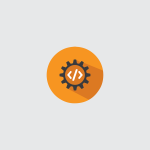

Skip to content
Menu
ক্যারিয়ার কন্টেন্ট
ক্যারিয়ার প্রোফাইল
ক্যারিয়ার গাইড
ইনফোগ্রাফিক
পাঁচমিশালি
ক্যারিয়ার টেস্ট
ইভেন্ট
কোন বিষয়ে কন্টেন্ট খুঁজছেন?
নির্দিষ্ট বিষয়ে সার্চ করলে কন্টেন্টের ধরন নির্বাচনের প্রয়োজন নেই
কোন ধরনের কন্টেন্ট চাইছেন?
যেকোন কন্টেন্ট...
ক্যারিয়ার নির্বাচন
চাকরির খোঁজ ও প্রস্তুতি
স্কিল ডেভেলপমেন্ট
উদ্যোগ ও উদ্যোক্তা
ক্যারিয়ার প্রোফাইল
ক্যারিয়ার ইনফোগ্রাফিক
ক্যারিয়ারকী পাঁচমিশালি
ফিল্টার করুন
ক্যারিয়ার কন্টেন্ট
প্রোডাক্ট ম্যানেজার
পাবলিক স্পিকিংয়ে ভালো করার ৫ উপায়
ক্যারিয়ার গড়ায় ভলান্টারি কাজের সুবিধা
সার্ভেয়ার
ব্যবসার জন্য পুঁজি কোথায় পেতে পারেন?
গ্রাফিক ডিজাইনের সফটওয়্যার: নির্বাচিত ৩
ভিডিও ইন্ডাস্ট্রির কাজ
লাইসেন্স দরকার হয় যেসব ক্যারিয়ারে
মানবসম্পদ বিভাগের কাজ
নেটওয়ার্কিং কী ও কর্মজীবনে এর গুরুত্ব
ইন্টারভিউর ১০ ভুল: যা এড়িয়ে চলবেন
এমএস এক্সেলের গুরুত্বপূর্ণ ফাংশন: দ্বিতীয় পর্ব
কমিউনিটি এনগেজমেন্ট অফিসার
এমএস এক্সেলের গুরুত্বপূর্ণ ফাংশন: প্রথম পর্ব
হল্যান্ড থিওরির ব্যাখ্যা
একাডেমিয়া-ইন্ডাস্ট্রি পার্টনারশিপ: কী ও কেন?
ক্রেডিট অ্যান্ড রিস্ক অ্যানালিস্ট
হাউসকিপার
কীভাবে দোকান খুলবেন?
পোর্টফোলিও: কী ও কেন
নিউজ প্রেজেন্টার
ফিটনেস ট্রেইনার
কীভাবে ফাস্ট ফুড ব্যবসায় সাফল্য পাবেন?
ইন্টারভিউ প্রস্তুতি: ১০ জরুরি বিষয়
রেডিও জকি
হল্যান্ড থিওরিতে ব্যক্তিত্বের ধরন কেমন হয়?
স্পিচ অ্যান্ড ল্যাঙ্গুয়েজ থেরাপিস্ট
ম্যানিকিউরিস্ট
গাইনিকোলজিস্ট
ট্রাভেল এজেন্ট
পেইন্টার
অডিটর
অ্যানিমেটর
মাইনিং ইঞ্জিনিয়ার
লজিস্টিকস অফিসার
ম্যানেজমেন্ট কনসালট্যান্ট
স্টোর কিপার
মাইক্রোবায়োলজিস্ট
নগর পরিকল্পনাবিদ
বিশ্ববিদ্যালয় শিক্ষক
ইউরোলজিস্ট
ভেটেরিনারি ডাক্তার
ওয়াটার রিসোর্স ইঞ্জিনিয়ার
ওয়েটার
মিডওয়াইফ
প্রাথমিক শিক্ষক
দোকান খোলার চ্যালেঞ্জ কী কী?
সাউন্ড ইঞ্জিনিয়ার
ফিল্ড ফ্যাসিলিটেটর
পাবলিক হেলথ অফিসার
এনভায়রনমেন্টাল ইঞ্জিনিয়ার
বায়োটেকনোলজিস্ট
প্রোগ্রাম অফিসার
সাইকিয়াট্রিস্ট
রেডিওলজিস্ট
পিসি সার্ভিস টেকনিশিয়ান
হেমাটোলজিস্ট
বিসিএস পরিবার পরিকল্পনা: সহকারী পরিচালক
বিসিএস পরিসংখ্যান: পরিসংখ্যান কর্মকর্তা
স্পোর্টস কোচ
লোন অফিসার
বিজনেস অ্যানালিস্ট
শেফ
দুর্যোগ ব্যবস্থাপক
এসি টেকনিশিয়ান
প্রোগ্রাম কোঅর্ডিনেটর
অ্যারোস্পেস ইঞ্জিনিয়ার
জিআইএস স্পেশালিস্ট
ল্যাব সহকারী (শিক্ষা প্রতিষ্ঠান)
ইন্টেরিয়র ডিজাইনার
কার্ডিয়াক নার্স
হেলথ, এনভায়রনমেন্ট অ্যান্ড সেফটি স্পেশালিস্ট
কমিউনিটি স্বাস্থ্যকর্মী
নেটওয়ার্ক আর্কিটেক্ট
নিউজ এডিটর
নিউক্লিয়ার ইঞ্জিনিয়ার
মেডিকেল টেকনোলজিস্ট
পেট্রোলিয়াম ইঞ্জিনিয়ার
ফটোগ্রাফার
নেটওয়ার্ক ইঞ্জিনিয়ার
ইনফরমেশন টেকনোলজিস্ট
লাইফগার্ড
লন্ড্রি অপারেটর
ডিসপ্যাচ সুপারভাইজার
কার্ডিওলজিস্ট
বারিস্তা
বিসিএস সড়ক ও জনপথ: সহকারী প্রকৌশলী
ফরেনসিক বিশেষজ্ঞ
কম্পিউটার হার্ডওয়্যার ইঞ্জিনিয়ার

সফটওয়্যার ডেভেলপার
ব্যাংকিং খাতের প্রশিক্ষণ
রেস্টুরেন্ট ম্যানেজার
একজন ভালো গবেষকের দশটি গুণ
সিএ ও এসিসিএর মধ্যে ৫ টি পার্থক্য
সাপ্লাই চেইন ম্যানেজমেন্ট কী ও কেন?
১০টি চাকরি যেগুলোর অস্তিত্ব ভবিষ্যতে থাকবে না
বিসিএস শিক্ষা: প্রভাষক
ক্যাড ডিজাইনার
চার্টার্ড অ্যাকাউন্ট্যান্ট
আরো কন্টেন্ট দেখুন